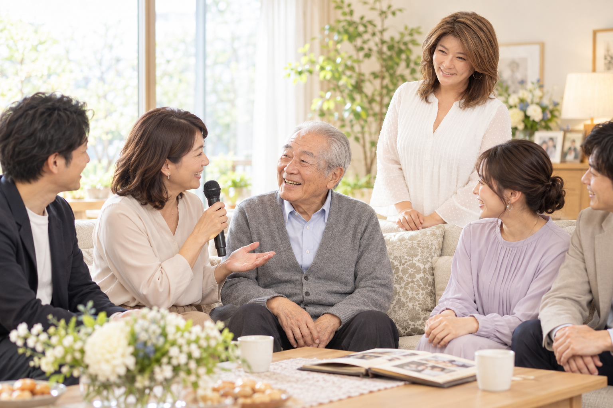

DIALOGUE & EXPERIENCE
対話から
体験から
自分やチームと向き合う時間、子どもたちの取材体験。
活動の内容と、いまの準備状況をご紹介します。
COACHING
自分のこれから
チームのこれから
目標に合わせたコーチングをご相談ください
アスリート・経営者・リーダーの目標達成をサポートします。対面・オンラインに対応し、基本は継続、単発のご相談も可能です。
目標や課題に合わせて、時間・回数・期間とサポート内容をご相談いただけます。
料金は、ご相談内容に応じて個別にお見積もりします。
個人やチームの悩み・目標を対話で整理し、次の一歩を考えるコーチング。
継続プランの回数・期間・総額や、追加費用は、ご相談内容に合わせて確認します。
- ご相談について
- 個人かチームか、いまの状況、相談したいテーマをお知らせください。
- 条件について
- 対面・オンラインに対応します。継続の回数・期間・総額、追加費用は、ご相談の中で確認します。
KIDS / PROGRAM CONCEPT
自分で考え
人と関わり 伝える力を
プログラム構想中
気づいたことを質問し、相手の話を聞き、自分の言葉で伝える。インタビューには、これから社会で生きていくために大切な経験が詰まっています。
KIDSは、インタビューを通じて、自分で考え、人と関わり、伝える力を育むプログラムを目指しています。
- 観察よく見て
気づく - 質問知りたいことを
考える - 取材相手の話を
聞く - 整理伝えることを
選ぶ - 表現自分の言葉で
届ける
現在は参加募集を行っていません
対象年齢・日時・会場・料金・参加方法、写真や動画の公開の扱いは未確定です。決まり次第、正式な内容をご案内します。
THANK YOU CELEBRATION
ありがとうを
今 伝える時間

ご案内準備中
大切な人に感謝を伝える会を、どのようにお手伝いするか。詳しい内容は準備中です。
Thank you Celebrationは、生前葬をテーマにした活動です。開催形式・中願寺さんの担当範囲・料金・受付方法は、確認してからご案内します。
詳しい内容を準備しています
このページでは、開催やサービスのお申し込みは受け付けていません。
LET’S TALK
企画の途中から
お聞かせください
何を届けたいか、いつごろを考えているか。
いま分かることから、お知らせください。